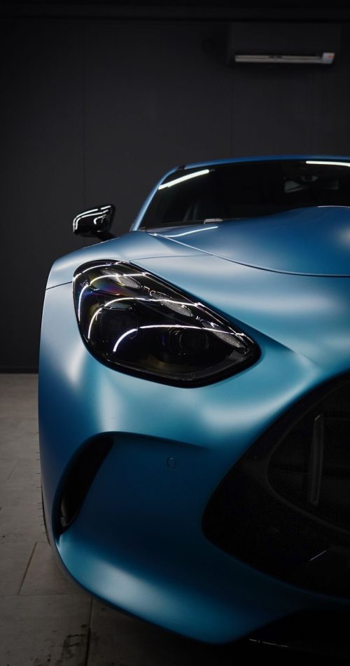
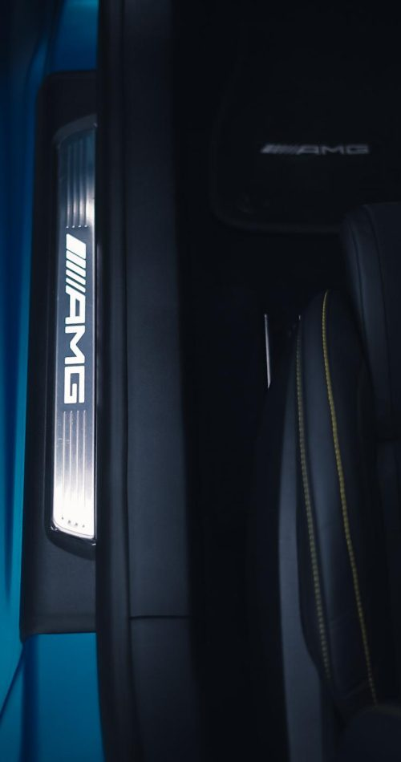
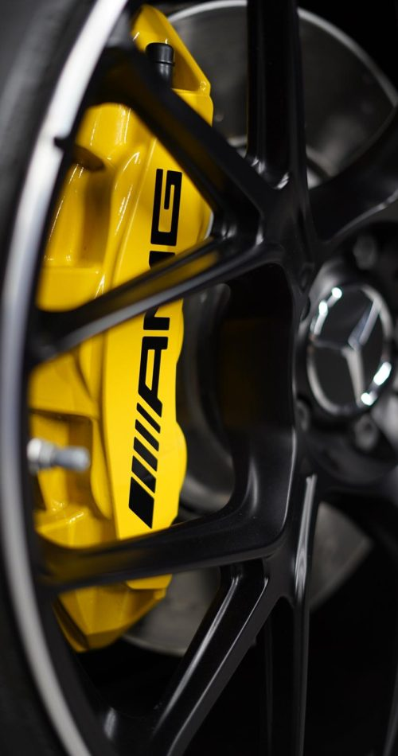
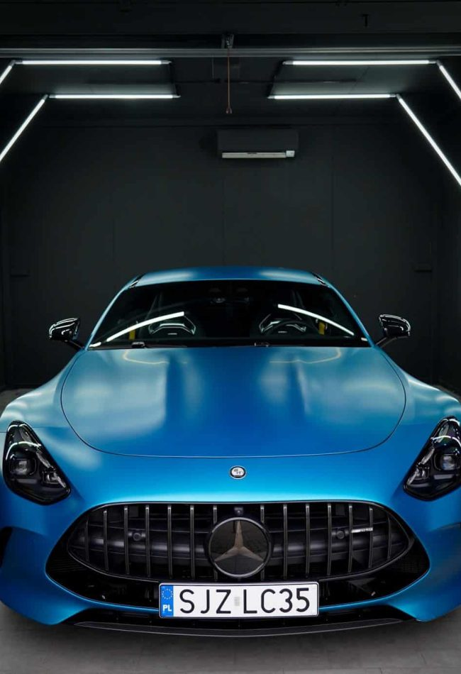
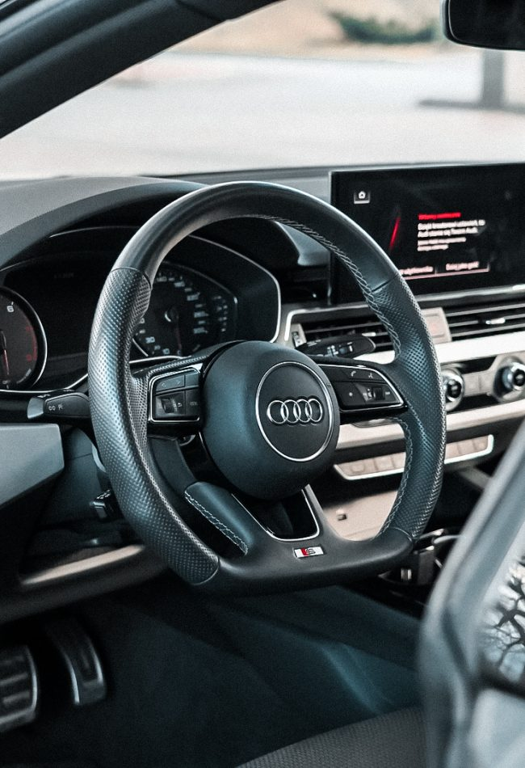
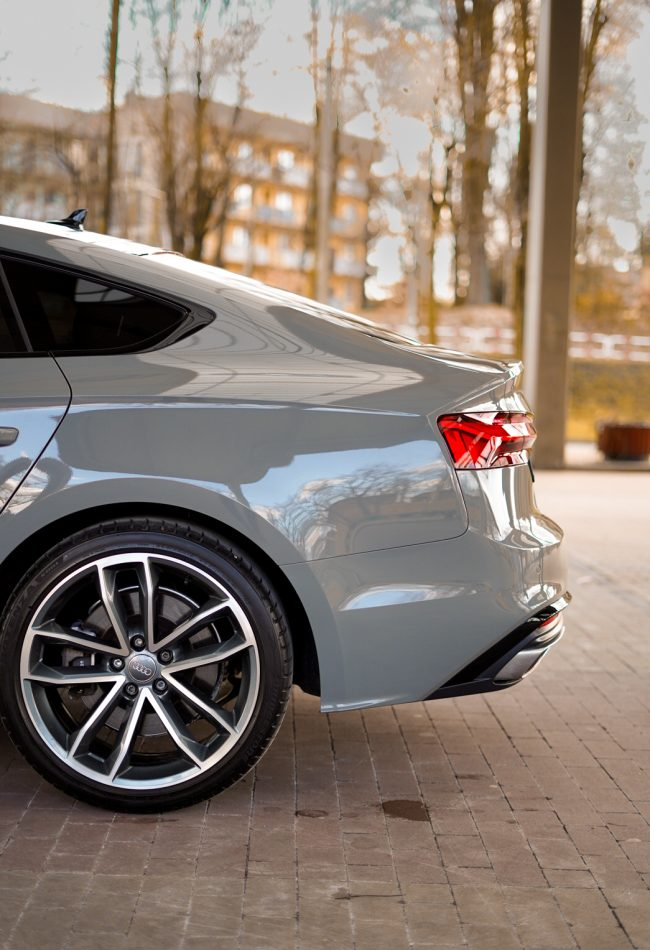
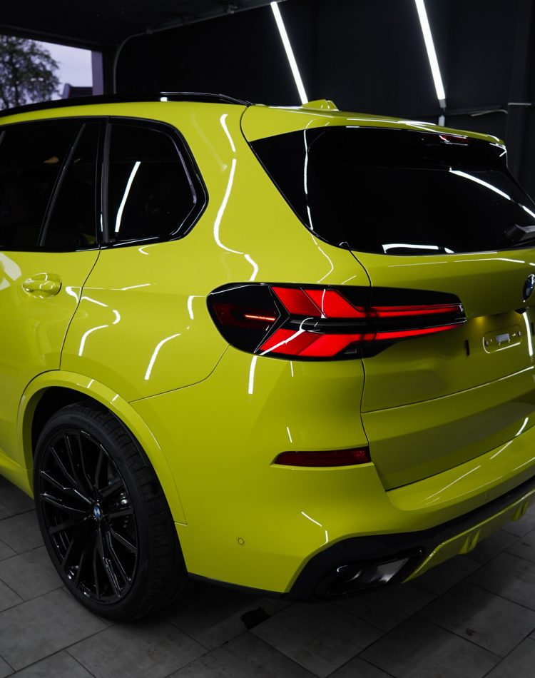
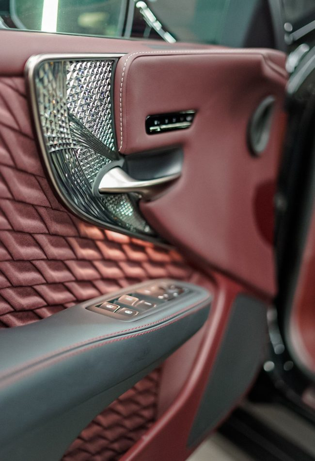

Zaufaj precyzji, kreatywności i pasji do detali
Detailing samochodowy to sztuka dbania o każdy detal auta. Wierzymy, że każdy element pojazdu – od przycisku na desce rozdzielczej po wykończenie nadkoli – zasługuje na pełną uwagę. To nie tylko kosmetyka, ale też pasja do perfekcji, która pozwala zachować piękno i trwałość na długie lata.
Pracujemy z precyzją, która zadowoli nawet najbardziej wymagających kierowców. Nasza kreatywność i doświadczenie sprawiają, że każde auto opuszczające nasze studio wygląda wyjątkowo. Detailing to dla nas nie tylko praca, ale i powołanie – prawdziwa dbałość o każdy szczegół, tak aby Twój samochód zawsze prezentował się perfekcyjnie.